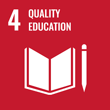

Human Practices
Integrated Human Practices: Consulting relevant stakeholders and experts
- We firstly approach the current leading experts studying the microbial biodegradation of plastic. Especially, researchers who are or have worked on biodegradation of PET. Since the focus of our project is primarily on geentically modifying I. sakaiensis, we would approach Yoshida et al., as well as Knott et al. for more details, suggestions and advic for our project.
- We would also like to approach the iGEM Ionis Paris 2022 team for their advice and inputs regarding the development of the new MFC, as a significant portion of project is inspired from their project.
- Talking to people working at landfill or waste management sites will provide insight into the current and real situation of plastic waste management in India. This may help us to assess the potential impact of our project in resolving this global environmental issue, and perhaps mold our project accordingly.
- Talking to industrial PET manufacturers and their efforts in curbing pollution will provide insights into the manufacture and nature of PET.
- Approaching environmentalists, especially those who are working for plastic waste management, will give us a more ecological and social insight into the problem.
Education and communication: Creating awareness about global environmental issues, synthetic biology and our project
- Creating awareness in schools: We want to target audiences of various age groups among which included children. For this, we would like to approach a primary school students. We plan to conduct experiments and tell creative narratives to create awareness about plastics and its waste management problem in a simple, but impactful manner. This should not only generate awareness but develop an overall understanding and liking for science.
- Presenting the project in our institute and local science organizations: This would help target the scientific audience. Here we aim to present our project. We also intend to conduct seminars and talks by inviting people working in the field of synthetic biology. This should help the students in gaining insights into both the field and its prospects.
- Conducting cleanliness drives: This will not only be a direct intervention against plastic pollution but, we hope, will provide people a real picture of the imminent seriousness of the issue.
Sustainable Development goals
